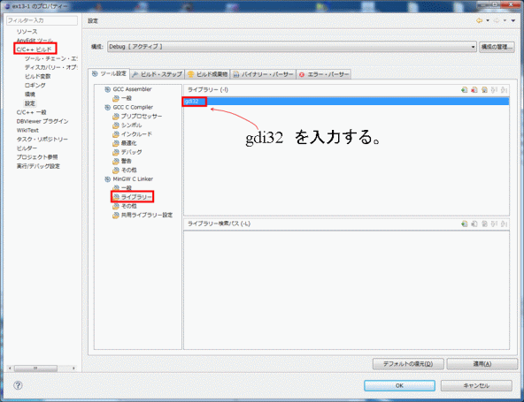

| プログラミングおよび演習 ＮＯ．13 |
| グラフィックス |
gdi.hで用意しているグラフィックス関数
| 関数定義 | 機能および使い方 |
| void G_CLS(void) | 画面を消去する。呼び出すと画面が消える。 |
| void G_LINE(int x1, int y1, int x2, int y2, int c) | 始点(x1,y1)、終点(x2,y2)の２点間を、色番号cの色の直線で結ぶ。ここで、色番号は下表に示す約束の色を表す。 |
| void G_PSET(int x, int y, int c) | 点(x,y)に色番号cの色の点を打つ。 |
| void G_CIRCLE(int x, int y, int r, int c) | 点(x,y)を中心とする半径rの、塗りつぶしのなしの円を、色番号cで指定した色で描く。 |
| void G_FCIRCLE(int x, int y, int r, int c) | 点(x,y)を中心とする半径rの塗りつぶし円を、色番号cで指定した色で描く。 |
| void G_RECTANGLE(int x1,int y1,int x2,int y2,int c) | 左上隅座標(x1,y1)、右下隅座標(x2,y2)を対角点に持つ長方形を、色番号cの色で塗りつぶしなしで描く。 |
| void G_FRECTANGLE(int x1,int y1,int x2,int y2,int c) | 左上隅座標(x1,y1)、右下隅座標(x2,y2)を対角点に持つ長方形を、色番号cの色で塗りつぶして描く。 |
| void G_TEXT(int x, int y, char *string, int c) | 座標(x,y)の位置に、文字列 string[ ] を、色番号cで指定した色で表示する。 |
|
Eclipse上で、グラフィックス関数を使ったプログラムを作成するための手順を、以下に示します。
[1] 前準備
(1)Eclipse上でのプロジェクトの新規作成
今までと同様の手順（ツールチェーンはMinGW GCCを選択する）に従って、プロジェクトを新規作成する。
(2) ヘッダファイルのダウンロード＆ペースト
ヘッダファイルgdi.hをここ (Last update: 2012.12.19)（下線部を右クリックして[名前をつけてリンク先を保存]を選択する）からダウンロードして、ソースファイル（プロジェクト名.c ）が入っているフォルダ(Z:\workspace\Project名\srcのフォルダ)にコピー＆ペーストしてください。
(3)ヘッダファイルの読み込み
・プロジェクトエクスプローラウィンドウで、プロジェクト名のアイコンを選択する。
・ファイル→リフレッシュ（またはF5ボタンをクリック）を実行する（プロジェクトエクスプローラにgdi.hが表示される）。
(4)ライブラリのリンク指定
以下の手順に従って、グラフィックライブラリ：gdi32.lib をリンク指定する。
・プロジェクトエクスプローラで、プロジェクト名アイコンを選択(プロジェクト名の背景色が変わった状態にする）
・メニューバーの[プロジェクト]の中の[プロパティ]をクリック
（または、プロジェクト名アイコンを右クリックした時のメニューから[プロパティ]を選ぶ（メニューの一番下に隠れているので注意））
→右図のプロパティウィンドウが開く。
開いたプロパティウィンドウ左段のメニューで、
・C/C++ビルドを展開し（左の△(三角)をクリック）、[設定]を選択。
中央の設定ウィンドウで、
・MinGW C Linkerの「ライブラリ」を選択
ライブラリー画面が開く。
・右上の緑色の[＋]（ライブラリー追加ボタン）を選んで、
gdi32
と入力する。
以上の(1)～(4)は、グラフィックス関数を使うための前準備にあたる作業です。
この後、いよいよプログラム本体の作成作業を行います。
[2] Cプログラムの作成（ソースファイルの編集）
グラフィックスプログラムは、次のように作ってください。
(1)表題の設定
ソースプログラムの先頭で、
#define PROGRAM "hyodai"
のように、タイトルバーの表題を設定します。
(2)gdi.hのインクルード
#include "gdi.h"
のように、ヘッダファイルgdi.hをインクルードします。
(3)main関数の代わりにwm_paint関数を用意する。
次のようにwm_paint関数を用意する。main関数は不要。wm_paintの中にプログラムを作る。
void wm_paint(void)
{
/*ここにプログラムを作る。
}
以上をまとめると、グラフィックプログラムは次のように作ればよいことになります。
/* グラフィックプログラムの作り方 */ #define PROGRAM "hyodai"/*タイトルバーの表題 */ #include "gdi.h" /* グラフィック描画用ヘッダファイル */ void wm_paint(void) { /* デフォルトのmainをwm_paint に変更する*/ /*ここにプログラムを作る。必要なグラフィック関数を呼び出す。*/ } |
[3] コンパイル＆実行
・Eclipse画面で、[ファイル]->[保管]を選んで（または Ctrl+S) 、ソースファイルを保存。
・ビルドボタン（ハンマーのマーク）を押してビルドする。
エラーがなく、
Build complete for project プロジェクト名
Time consumed: 421 ms.
のメッセージが出れば正常終了。
・実行ボタン（三角マーク）を押して実行する。
グラフィクウィンドウ（640x480）が現れる。
画面上にプログラムしたグラフィックが描かれる。
必要に応じてグラフィック画面をセーブする（セーブの方法はここを参照）。
・終了ボタン（[x]）をクリックすると画面が消えて終了。
例13-1#define PROGRAM "ex13-1" /*タイトルバーの表題 */
#include "gdi.h" /*グラフィック関数を使うためのヘッダーファイル*/
void wm_paint(void)
{
G_FCIRCLE(320,240,100,Red); /*赤で塗りつぶした円を描く*/
G_FRECTANGLE(0,240,640,480,Blue); /*青で塗りつぶした長方形を描く*/
}
|
| 演習問題13-1 (Revised : 2011/12/28) 例13-1のプログラムを実行して、グラフィック関数の使い方を覚えてください。 その際、空の色をマゼンタに塗りつぶし、黄色の三日月も太陽の右上か左上に一緒に描いてみてください （天文学的にはありえない構図ですが、単に演習としてやってください）。 |
| 演習問題 13-2 画面上に次のような長方形の模様を描いてみてください（長方形の位置や色は適当に工夫すること）。 注意：レポートには、 グラフィック画面のセーブ方法 に書いてある説明に従って保存した画像ファイルを添付してください。その際、 png, gif, jpgなどの圧縮形式のファイルを添付するようにしてください。 １ＭＢを超えるサイズの大きいファイルをメールに添付すると、 受け取る人が迷惑しますので気をつけてください（１枚の画像は10～20ｋBぐらいの大きさが目安です）。 |
| 得点表の描画 |
例13-2 (Revised : 2012/1/10)
#include <stdio.h>
#include <math.h>
#define PROGRAM "ex13-2 Score Table"
#include "gdi.h"
struct slist{
char name[20];
int ten[3];
int total;
};
void wm_paint(void)
{
/*変数宣言と配列の初期値設定*/
int i,j;
int ix2,iy1,iy2,ix0=80,iy0=55,wid=38;
int col[5]={Blue,Red,Green,Cyan,Magenta};
struct slist seiseki[5]={{"Ito", {70, 60, 80}, 0},
{"Kato", {50, 60, 50}, 0},
{"Tanaka",{70, 90,100}, 0},
{"Suzuki",{90,100, 50}, 0},
{"Yamada",{40, 70, 80}, 0}};
/*表題*/
G_TEXT(ix0+5,iy0-20,"Kimatsu shiken",Blue);
/*各学生の３科目の合計（行の計算）*/
for(i=0;i<5;i++){
for(j=0;j<3;j++){
seiseki[i].total += seiseki[i].ten[j];
}
ix2=ix0+seiseki[i].total;
iy1=iy0+i*wid+5;
iy2=iy1+wid-5;
G_TEXT(ix0-70,iy1+8,seiseki[i].name,Blue);
G_FRECTANGLE(ix0,iy1,ix2,iy2,col[i]);
}
G_RECTANGLE(ix0,iy0,ix0+300,iy0+5*wid+5,Black);
}
|
演習問題 13-3 (Revised : 2015/1/5) ※以下の課題の中には考察について特に指示はしていませんが、レポートには必ず考察を含めて下さい。
また、通り一遍のプログラムの説明のみにならないように気をつけてください。
(1)例13-3のプログラムの成績データを以下のように変更し、プログラムを実行して棒グラフを描いてください。
struct slist seiseki[5]={{"Abe", {81, 60, 54}, 0},
{"Inose", {10, 13, 37}, 0},
{"Kaieda", {52, 48, 59}, 0},
{"Hashimoto", {61, 63, 54}, 0},
{"Watanabe", {38, 57, 45}, 0}};
(2)下図のように、折れ線グラフを追加してみてください。 (3)余力のある人は、合計点を、下図のように各科目の得点ごとに色分けして表示させてみてください。 [補足説明] 文字表示には、G_TEXT() を使ってください。使い方は関数表の説明をみてください。表示可能な文字は半角文字（アルファベット英数字）だけでなく、全角の日本語文字も表示できます。 |
例13-3 (Revised : 2011/12/28)#define PROGRAM "ex13-3 Sine wave display"
#include "gdi.h"
void sindata(int,float,float,float,float *);
void waku(int,int,int,int,int,int);
void draw_data(int,float *,float,float,int,int,int,int,int);
void wm_paint(void)
{
static float data[1000];
int len=500;
int Wxmin=50,Wymin=100,Wxmax=550,Wymax=350,Sxnum=4,Synum=6;
float Dmax=1.5,Dmin=-1.5,freq=40.0;
waku(Wxmin,Wymin,Wxmax,Wymax,Sxnum,Synum);
sindata(len,freq,1e-4,1.0,data);
draw_data(len,data,Dmax,Dmin,Wxmin,Wymin,Wxmax,Wymax,Blue);
}
/*サイン波のデータを計算して配列に格納する*/
void sindata(int len, float freq,float tdel,float amp,float *data)
{
int i;
float time;
for(i=0;i<len;i++){
time=tdel*i;
data[i]=amp*sin(2.0*PI*freq*time);
}
}
/*枠の描画*/
void waku(int Wxmin,int Wymin,int Wxmax,int Wymax,int Sxnum,int Synum)
{
float xd,yd;
int i,x1,y1;
/* 外枠の描画*/
G_RECTANGLE(Wxmin,Wymin,Wxmax,Wymax,Blue);
/* 横をSxnum分割した縦線を引く*/
xd=(float)(Wxmax-Wxmin)/(float)Sxnum;
for(i=1;i<Sxnum;i++){
x1=Wxmin+i*xd;
G_LINE(x1,Wymin,x1,Wymax,Blue);
}
/* 縦をSynum分割した横線を引く*/
yd=(float)(Wymax-Wymin)/(float)Synum;
for(i=1;i<Synum;i++){
y1=Wymin+i*yd;
G_LINE(Wxmin,y1,Wxmax,y1,Blue);
}
}
/* 配列データの折れ線グラフを描く */
void draw_data(int len, float *data,float Dmax,float Dmin,
int Wxmin,int Wymin,int Wxmax,int Wymax,int color)
{
int i,x1,x2,y1,y2;
float xd,yscale,yoff;
x1=x2=Wxmin;
xd=(Wxmax-Wxmin)/(len-1); /* x方向の刻み幅*/
x2+=xd;
yscale=-(Wymax-Wymin)/(Dmax-Dmin); /* y方向のスケーリング係数*/
yoff=(Wymax*Dmax-Wymin*Dmin)/(Dmax-Dmin);/* y方向のオフセット*/
/* 基線(y=0)を引く*/
G_LINE(Wxmin,(int)yoff,Wxmax,(int)yoff,Green);
/* 隣あうデータを直線で結んでいく*/
for(i=0;i<len-1;i++){
y1=yoff+data[i]*yscale;
y2=yoff+data[i+1]*yscale;
G_LINE(x1,y1,x2,y2,color);
x1+=xd;
x2+=xd;
}
}
|
| 演習問題 13-4 ※以下の課題の中には考察について特に指示はしていませんが、レポートには必ず考察を含めて下さい。 また、通り一遍のプログラムの説明のみにならないように気をつけてください。 (1)例13-3のプログラムを実行し、サイン波のグラフを描いてください （演習問題11-3で行ったようにエクセルを使わなくてグラフを描くことができます）。 (2)演習問題11-4の後の補足に用意した関数を使って、サイン波の代わりに、三角波や矩形波のグラフを描いてみてください。 |
| 演習問題 13-5 （余力のある人だけで結構です） ファイルに格納してある波形データをグラフ表示するプログラムを作っみてください （ヒント：以下のようにすれば簡単につくれます。） (0)波形データのファイルへの書き込み：演習問題12-2のプログラムを使う（予め実行して作っておく） (1)ファイルの読み込み：例12-2で用いた読み込み関数file_read()を組み込む。 (2)波形の描画：例13-3の波形データ描画関数draw_data()を使う。 |
| 演習問題 13-6 (以下はやらなくて結構です） 以下は、整数倍の周波数のサイン波を適当な割合で足し合わせていくと、 のこぎり波が生成できることを、グラフに描いて確かめるためのプログラムです。 足りない部分を補って、プログラムを完成させてください。 プログラムのそれぞれの所で何を行っていますか。 最後に、足し合わせるサイン波の周波数や振幅を変えて方形波を生成するように、 プログラムを変更して結果を確かめてください。 #define PROGRAM "ex13-6"
#include "gdi.h"
void sindata(int,float,float,float,float *);
void add_data(int, float*,float*);
void waku(int,int,int,int,int,int);
void draw_data(int,float *,float,float,int,int,int,int,int);
void wm_paint(void)
{
static float data[1000],sum_data[1000];
int i,len=500;
int Wxmin=50,Wymin=100,Wxmax=550,Wymax=350,Sxnum=4,Synum=6;
float Dmax=1.5,Dmin=-1.5,freq=40.0,c1=4.0/3.141592;
waku(Wxmin,Wymin,Wxmax,Wymax,Sxnum,Synum);
/* F(f0)の波形を描く。sum_data[]に入れる*/
sindata(len,freq,1e-4,1.0,data);
draw_data(len,data,Dmax,Dmin,Wxmin,Wymin,Wxmax,Wymax,Blue);
add_data(len,data,sum_data);
/* (1/4)F(2f0)の波形データを描く。結果をsum_data[]に足す*/
sindata(len,freq*2,1e-4,-1.0/2.0,data);
draw_data(len,data,Dmax,Dmin,Wxmin,Wymin,Wxmax,Wymax,Red);
add_data(len,data,sum_data);
/* (1/16)F(3f0)の波形データを描く。結果をsum_data[]に足す*/
sindata(len,freq*3,1e-4,1.0/3.0,data);
draw_data(len,data,Dmax,Dmin,Wxmin,Wymin,Wxmax,Wymax,Magenta);
add_data(len,data,sum_data);
/* 足し算された波形データsum_data[]を描く。*/
draw_data(len,sum_data,Dmax,Dmin,Wxmin,Wymin,Wxmax,Wymax,Black);
}
/* 長さlenの配列データdata1[]とdata2[]を足し算する。結果をdata2[]に格納する。*/
void add_data(int len,float *data1,float *data2)
{
ここは自分で作る。
}
void sindata(int len, float freq,float tdel,float amp,float *data)
{
....
}
void waku(int Wxmin,int Wymin,int Wxmax,int Wymax,int Sxnum,int Synum)
{
....
}
void draw_data(int len, float *data,float Dmax,float Dmin,
int Wxmin,int Wymin,int Wxmax,int Wymax,int color)
{
....
} |